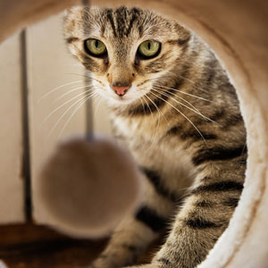

Below are details on volunteering, training sessions, and more!
Welcome and thank you for your interest in volunteering with Pets to Go. We are very grateful for your support. There are few things as rewarding as helping a homeless animal find a new home. When you volunteer at Pets to Go, you make a difference for homeless animals AND the people choosing to adopt them.
Volunteering can take a variety of forms. From serving as an ambassador spreading awareness in the community, to providing enrichment and socialization for an animal, to training other volunteers on how to support our mission, volunteer team members give their time and talent to change the lives of thousands of pets each year.
Photo by Kat Jayne from Pexels
Pets to Go volunteers are committed to furthering our mission to promote animal welfare, strengthen the human-animal bond, and prevent the overpopulation of pets.
Our Volunteer Requirements
A weekly commitment to fill one volunteer shift per week for a minimum of 6 months. Must be able to commit to and complete the on-boarding process. Must have a working email address
All oncoming volunteers will be reviewed through Illinois Courts Online Please note: we do not accommodate individuals with past or present assault, harassment, theft, or animal abuse charges.
How to Become a Volunteer
All you need to do is attend an information session and you are ready to work with us!
Volunteer team members give their time and talent to change the lives of thousands of pets each year. We could not do what we do without you, and we have unmet needs waiting for more talented volunteers to help us fulfill our mission!

Photo by Pixabay (this is their user name) from Pexels
You will learn about the different facets of the organization at the Volunteer Information Session.